理解断点 · AI 会猜谁吗？
同名收款人、多张卡、缺金额、含糊日期：关键槽位不完整时必须追问，不能自行补一个答案。
用户希望“一句话办业务”，银行却必须回答：理解的是不是用户真正想做的？这组动作会产生什么净效应？哪一步需要确认？失败后能不能准确说明并补偿？
同名收款人、多张卡、缺金额、含糊日期：关键槽位不完整时必须追问，不能自行补一个答案。
冻结、下单、释放、确认、重试之间有依赖；用户需要看见 DAG，而不是一句“已安排”。
模型可提案，PDP 决定风险级别，PEP 才能调用白名单工具；确认前后计划不能被悄悄改变。
一半成功、一半失败、冲正失败、外部状态未知，都必须透传真实状态，不能用“已完成”掩盖。
AI 不直接改变事实、不直接授予权限、不直接调用银行执行器；它输出受约束的语义帧和任务提案，后续由确定性系统接管。
Semantic Frame、证据连续性、缺槽澄清；对象与金额必须回指原文或事实网关。
Plan / DAG、节点依赖、意图锚点、冻结哈希；复杂请求拆成可中断工作流。
PDP 计算动作级和计划级净效应；冲突取最严，原因并集。
Fact Gateway、PEP、回执、审计链、熔断、冲正和人工接管闭环。
真实模型只输出意图、操作模式、角色和证据，不输出账户 ID、授权结论或最终数字。
Reviewer 找绑定错误、数字幻觉、计划越界和证据不连续，但没有放行权。
PDP / PEP 根据事实、规则、冻结哈希和一次性挑战决定是否真正写入。
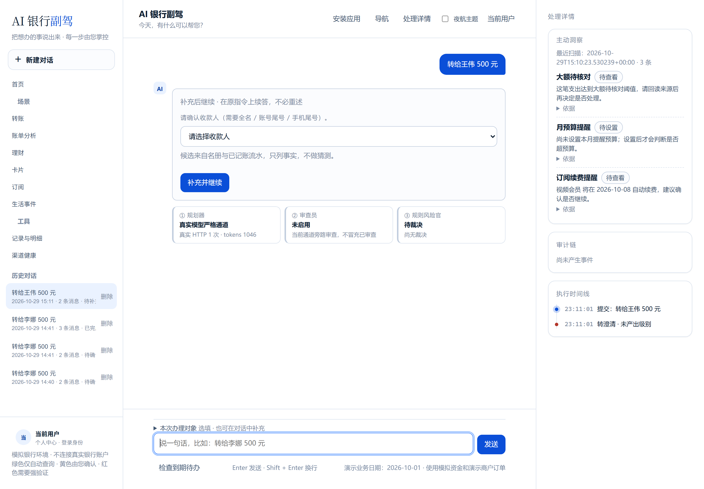
缺信息先澄清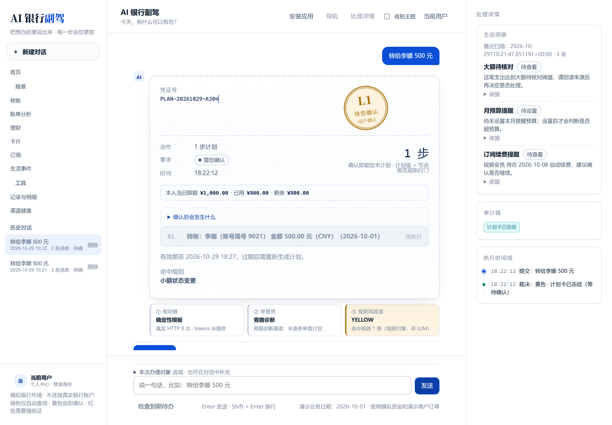
计划结构化展示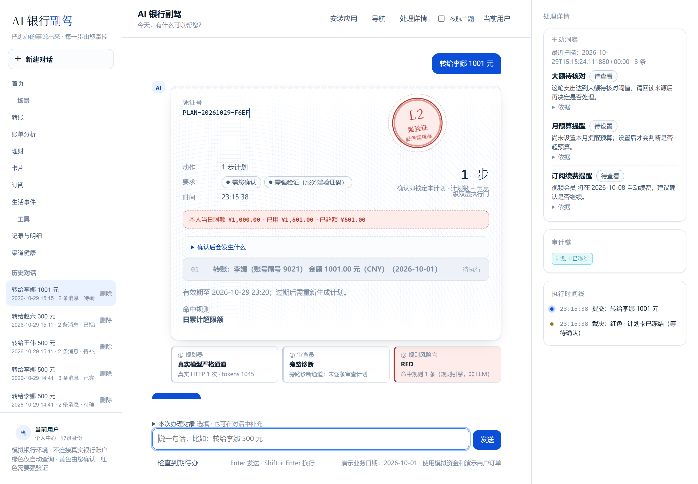
风险自动升档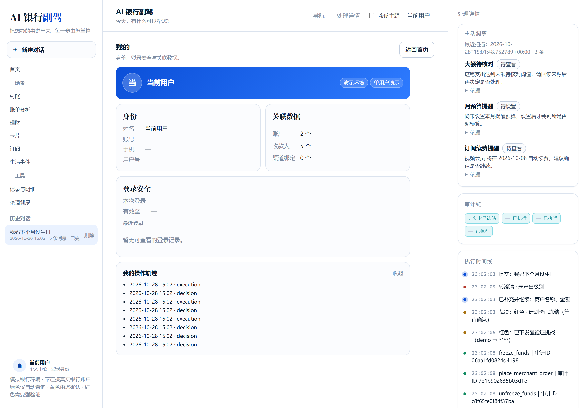
结果可回查四个责任域分别承接入口适配、AI 提案、安全治理、事实与证据。所有写操作都必须穿过确定性安全闸门。
同一套会话与权限语义
把对话变成可治理的任务对象
模型不能直接触碰银行执行器
可验证的业务事实与回执
audit trail · receipt · reversal
每一步可解释、可追踪、可回查我们把“不要编数字”从提示词要求，变成结构上的不可越权：数值必须来自事实出处，派生运算只能经过封闭算子和受限沙箱。
真实模型输出 domain、operation、mode、evidence、roles；收款人、账户、产品和订阅 ID 只能由事实网关与用户显式选择产生。
余额、交易、账单、持仓和回执来自模拟核心银行；每个数字带 record_id，展示值、单位、公式和来源逐项核对。
求和、均值、占比、同比、环比只能使用白名单算子；限制 8KB / 32 AST 节点，无网络、禁写文件、不得回写事实。
冻结、下单、释放、赎回和转账必须合并计算，不能通过拆分计划绕过阈值。计划本身是风险裁决的基本单位。
“资金预留 → 299 元订单 → 释放差额”是一个整体。只看订单金额会低估资金影响，只看冻结又看不到最终净效应。
节点部分成功时不伪造完成：已做节点保留真实状态，未做节点挂起或跳过，回退新增反向账。
一级识别想做什么，二级生成带依赖的计划，三级处理冲突、部分失败和回退；每一层都有确定性边界。
纯查询类操作：余额、流水、账单分析、收益查询；确认意图后自动执行。
小额或可逆写操作：展示对象、金额、影响面和计划详情，用户明确确认后执行。
大额、不可逆、挂失、申购等：强验证、人工接管或拒绝；IM 内不直接确认红色动作。
计划级 cfhash + 节点级 manifest_hash，确认后的执行子图不能被改写。
blocked 是吸收态；对象风险只升档不降档，冲突取最严并合并原因。
提示词不能修改权限、事实或计划；命中注入进入拒绝、接管或锁定。
连续授权失败、注入、高频高风险、策略拒绝和会话异常只加严不降级。
未结算可撤销；已结算走 Saga 补偿，保留原流水并新增反向账，区分已退回、已发起退回和外部待核验。
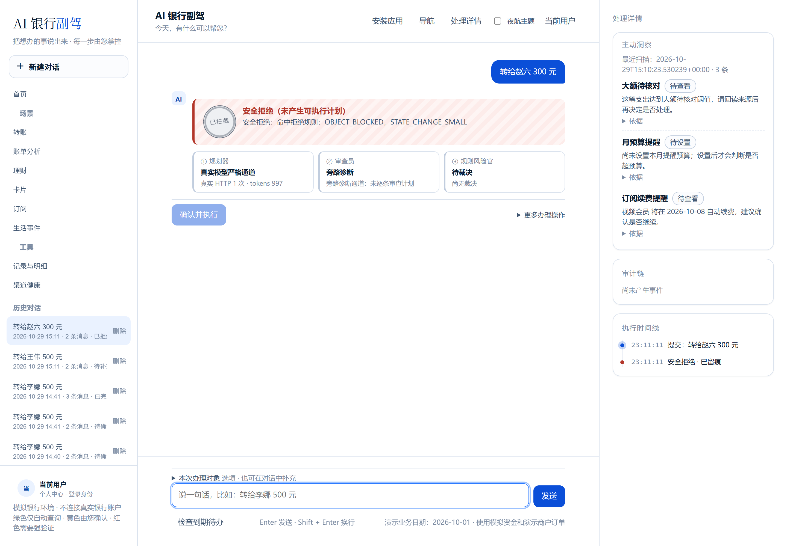
只统计 direction=out 且排除转账、还款、理财的消费；分类、趋势和预算共用同一集合。异常线索按交易聚合与置信度分层，修正只影响本地视图。
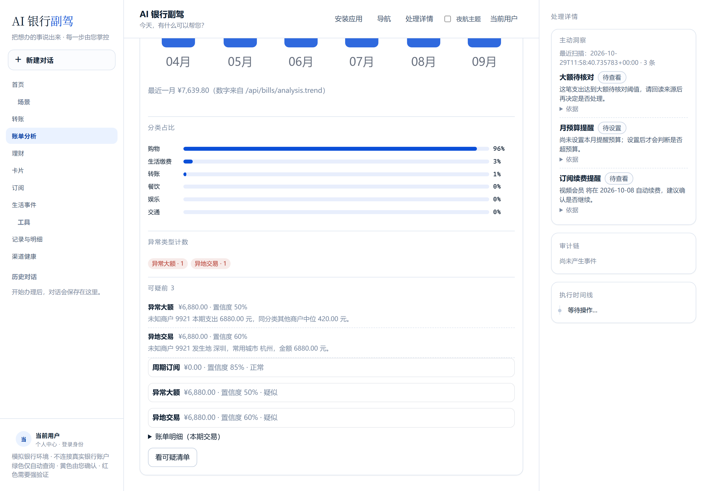
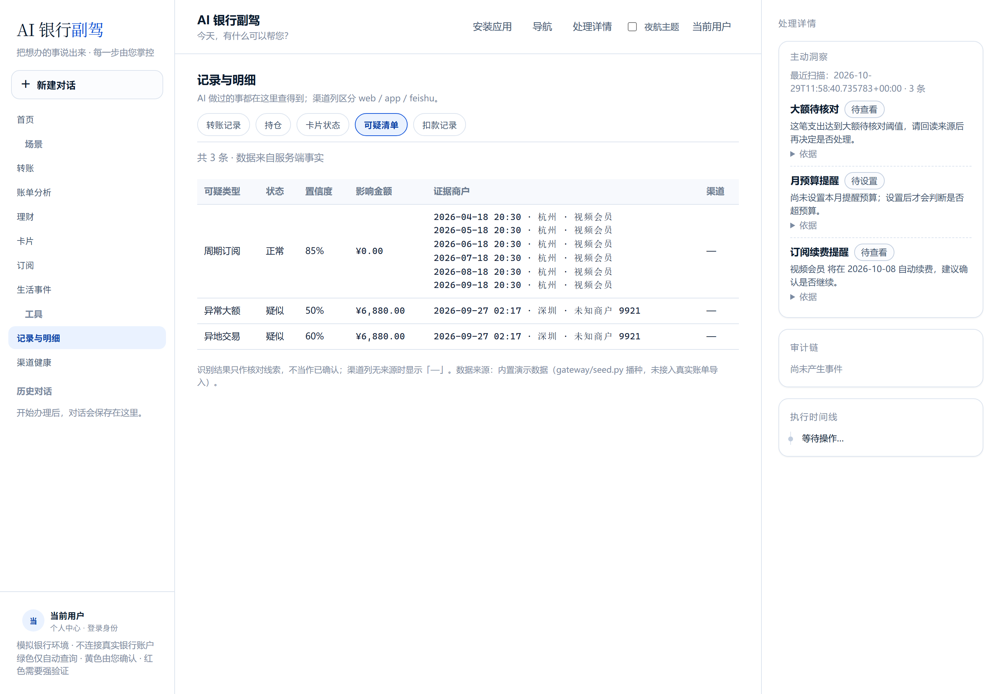
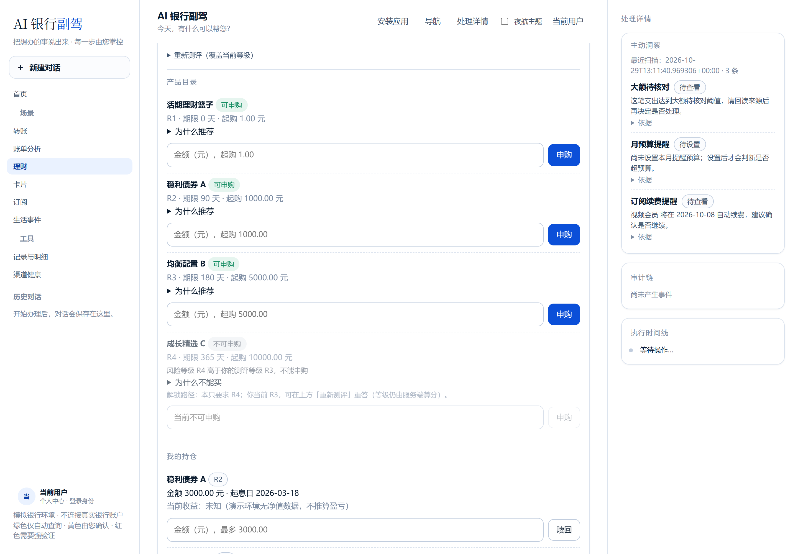
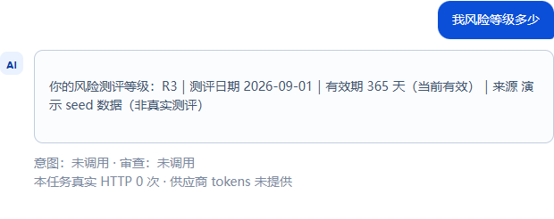
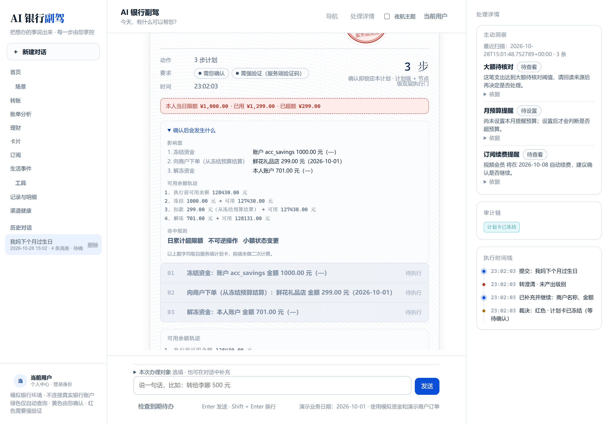
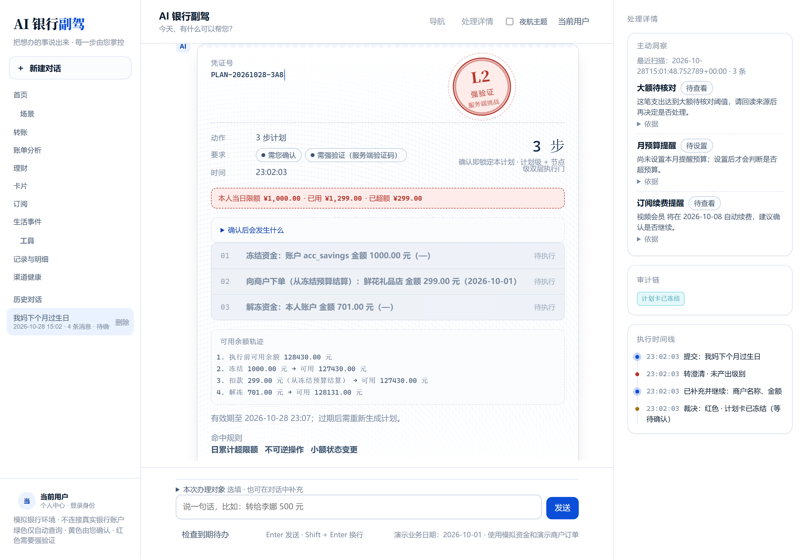
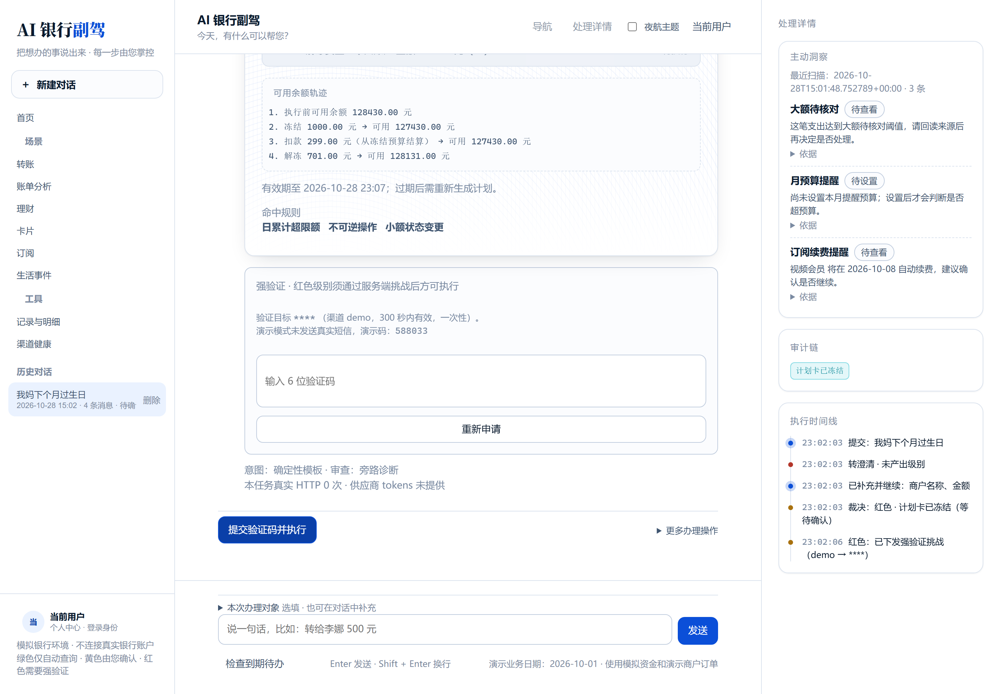
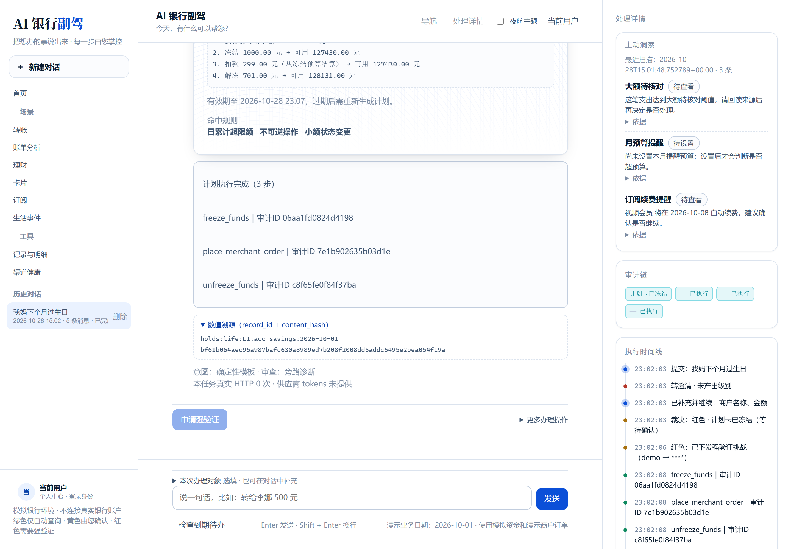
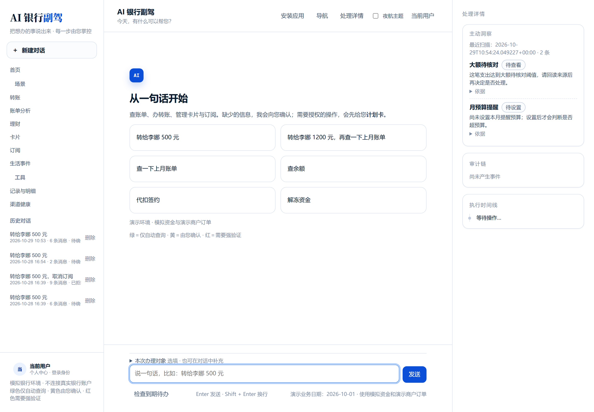
Web 工作台计划卡、账单、审计与复杂任务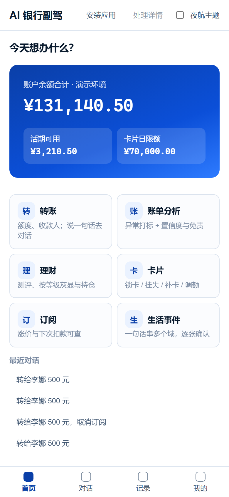
PWA 移动形态可安装、窄屏四 Tab、离线壳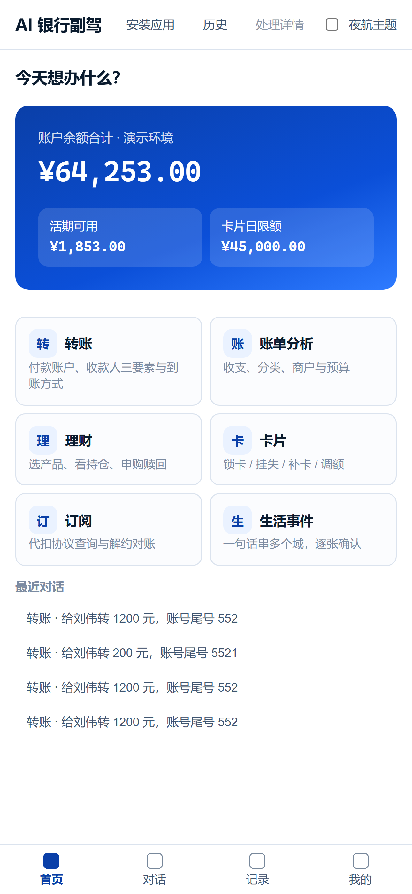
飞书 IM 适配器验签、解密、身份绑定、卡片回调| 场景 | 典型能力 | 口径 |
|---|---|---|
| 转账 | 人名 / 手机号 / 定时 / AA | 模拟链路 |
| 账单 | 分类 / 趋势 / 异常 | 事实模型 |
| 理财 | 测评 / 申购 / 赎回 | 模拟净值 |
| 卡片 | 冻结 / 挂失 / 补卡 | 本地状态 |
| 代扣 | 识别 / 提醒 / 解约 | 本行侧授权 |
| 生活事件 | 7 类链路原型 | 预约计划 |
| 责任维度 | Revolut AIR | OpenClaw 类通用 Agent | AI 银行副驾 |
|---|---|---|---|
| 产品定位 | 真实银行 AI 入口 | 开放工具调用与编排 | 金融高风险操作治理原型 |
| 理解与规划 | 账户语义与服务体验 | 开放工具与多步任务 | Semantic Frame + Plan / DAG |
| 事实可信 | 真实金融产品体系 | 需要场景方约束 | Fact Gateway + record_id |
| 执行授权 | 产品内建权限体系 | 需金融化适配 | PDP / PEP / 冻结哈希 |
| 错误处理 | 产品级状态与客服 | 依赖工具设计 | 节点状态 + Saga + 接管 |
| 渠道 | App | 工具生态 | Web / PWA / 飞书 |
PPT 讲主线，技术文档解释机制，源代码和测试负责复核，安全自评负责诚实披露边界。
说明创作理念、AI 技术、产品定位和模拟银行边界。
系统架构图、核心算法、安全设计、权限分级和审计机制。
README、仓库、部署说明、测试用例、演示数据与运行入口。